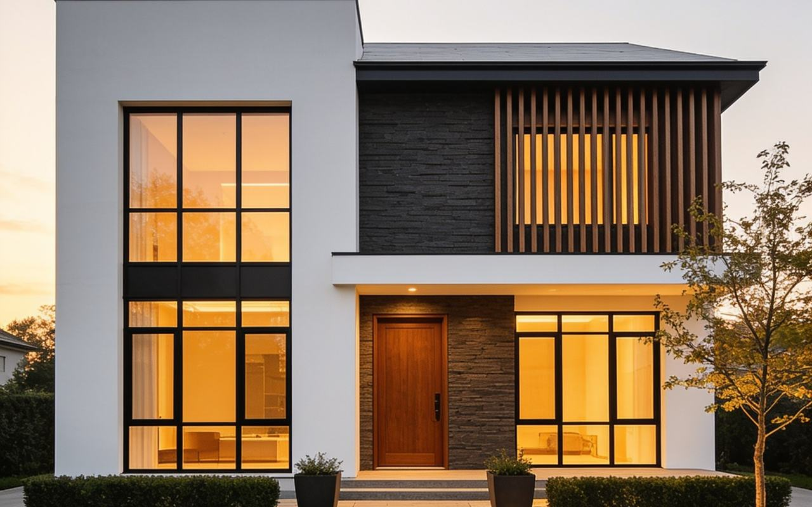
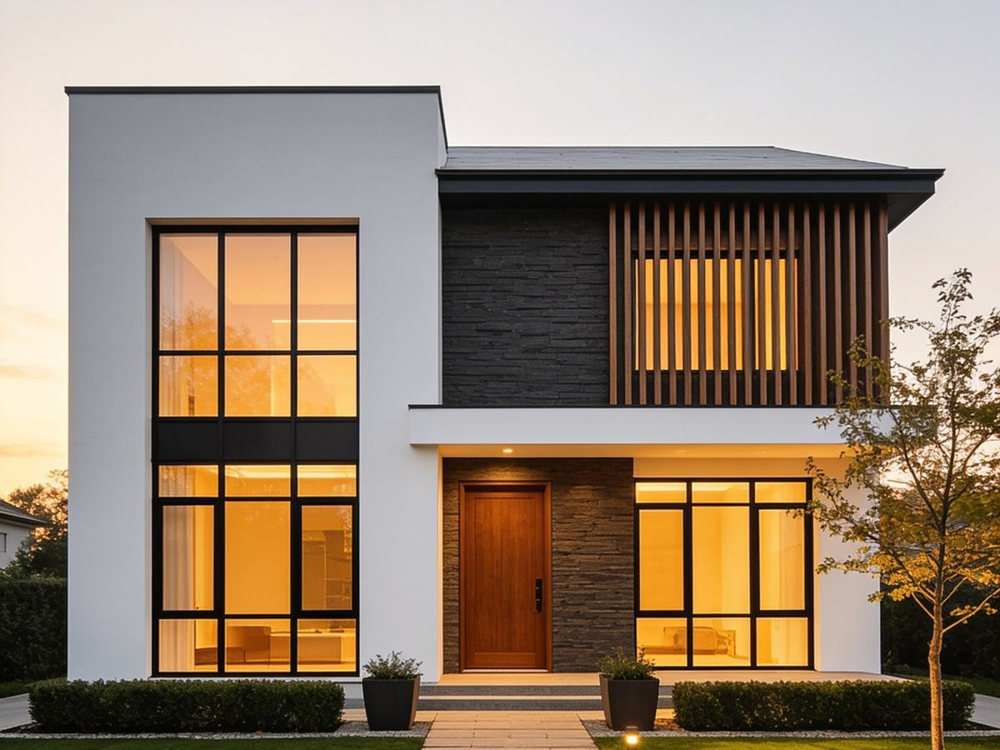
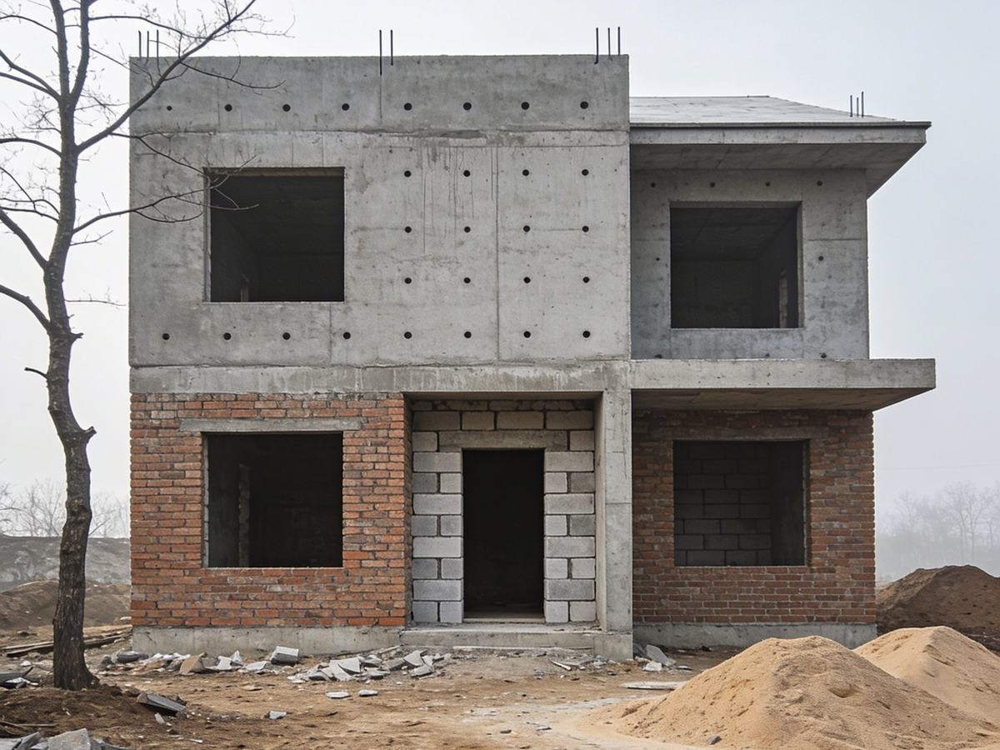

Stadtvilla Mörs
Klassische Proportion, zeitgemäß gebaut: eine Stadtvilla, die Repräsentanz und Alltagstauglichkeit nicht gegeneinander ausspielt.

Projektdaten
- Fertigstellung
- 2020
- Typ
- Stadtvilla, 2 Vollgeschosse
- Bauweise
- Massivbau
- Besonderheit
- Raumhohe Fensterfronten, offenes Erdgeschoss
- Weg
- 15 Meilensteine, termingerecht übergeben
Die Aufgabe
Die Bauherren wünschten sich ein Haus mit der Würde einer klassischen Stadtvilla — aber mit dem Licht, der Offenheit und der Energieeffizienz eines zeitgemäßen Neubaus. Der Entwurf antwortet mit ruhiger Symmetrie in der Kubatur und großzügigen Öffnungen dort, wo der Alltag stattfindet.
Die Umsetzung
Massive Bauweise, raumhohe Fensterelemente, ein offenes Erdgeschoss mit klarer Zonierung: Küche, Essen und Wohnen greifen ineinander, ohne sich zu stören. Die Bemusterung führte zu einer ruhigen Materialpalette — heller Putz, Anthrazit, warmes Eichenholz.



01 / 03